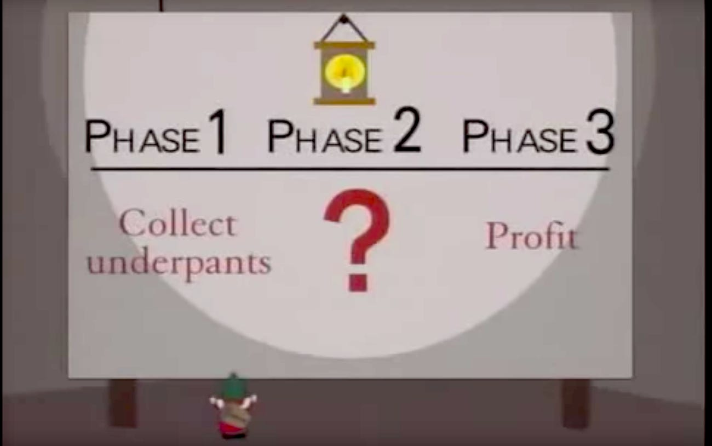
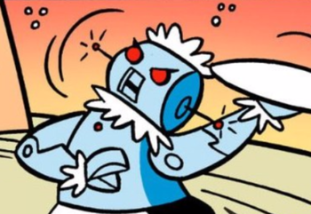

Problem Solving¶
The process of transforming a concept into code is the art of problem solving and it starts before you write a single line of code.
Programming is writing out instructions for the computer. So in order for our programs to work as expected, we must first know ourselves what it is that we are want the computer to do.
“The hardest single part of building a software system is deciding precisely what to build.” – Fred Brooks, The mythical man-month
Problem solving process¶
This lesson will provide one approach to problem solving.
1. Define the problem¶
The first step is to make sure you understand the problem you are trying to solve.
Write a short description of the problem you are trying to solve. This will often end up being the docstring for your script or function.
Your description should answer questions like:
Who will use this?
Why do they need it?
What does it do?
What are the inputs?
What are the outputs?
What are the side effects?
What is an example of when this might be used?
Here are a couple of examples:
"""Hangman game
A single-user game where the player is given 6 chances to guess all of the letters in a word.
"""
def is_prime(number):
"""Return True if the number is a prime. Takes a positive whole number and returns True or False.
Examples
--------
>>> is_prime(3)
True
>>> is_prime(4)
False
"""
2. Make a plan¶

This is the part where you figure out how to solve the problem. You’re not writing code yet, but rather thinking it through.
Keep the plan as simple as possible while still covering all the steps. You can drill down into each part as you go. It is sometimes helpful to using a pen and paper or whiteboard to sketch out a visual representation of the problem.
For larger problems, you’ll want to start by breaking it down into logical parts. Think in terms of how it will be used.
"""Hangman game
A single-user game where the player is given 6 chances to guess all of the letters in a word.
1. choose a short word, give the player 6 chances to guess letters
2. each turn:
- print their chances with `x` to show used chances, and `_` to show remaining
example: `chances: xx____`
- print the word, but replace `_` for unguessed letters
example: `5 letters: _e___`
- ask the player to guess a letter
3. tell the user at the end if they won or lost
"""
For more tightly scoped problems, solve the problem manually then describe each step in plain english.
def is_prime(number):
"""Return True if the number is a prime. Takes a positive whole number and returns True or False.
Examples
--------
>>> is_prime(3)
True
>>> is_prime(4)
False
"""
# iterate through each number less than the input number, starting at 2
# for each:
# divide the numbers
# - if the number is whole, return False
# if all numbers have been iterated through without returning, return True
3. Implement¶
Pick a part of your plan to start at. (Sometimes it makes more sense to start at the middle.)
A. Simplify¶
Ask yourself if this needs to be broken down further. If so, start back at at the first step for this new problem.
Once you’ve got the problem broken down into a discreet chunk, simplify it if neccessary.
Isolate it from other code by using use hardcoded placeholders. This can be especially helpful when other parts of the program aren’t written yet, if you’re not certian they are working, or if the data can be unpredictable.
Solve the easiest or most normal case first.
B. Write pseudocode¶
Write a plain english description of what the code should do. This can be a list of steps in comments. For simpler problems this may be the same as your plan.
C. Write the code¶
Fill in the actual code under the pseudocode comments.
D. Verify¶
Make sure the code works as expected.
A few different ways to check the output:
run your program with extra print statements
paste the code into a shell
write and run a test
This is where it is especially important to make sure your code is isolated. If you have too much going on, it will be hard to figure out which part isn’t working.
Example¶
Here’s an example of the is_prime() function:
def is_prime(number):
"""Return True if the number is a prime. Takes a positive whole number and returns True or False.
Examples
--------
>>> is_prime(3)
True
>>> is_prime(4)
False
"""
# iterate through each number less than the input number, starting at 2
for i in range(2, number):
# if the number is whole, return False
quotient = number/i
# convert the float to an int
# return False if the float is equal to the int
if quotient == int(quotient):
return False
# if all numbers have been iterated through without returning, return True
return True
print("is_prime(3):", is_prime(3))
print("is_prime(4):", is_prime(4))
4. Iterate¶

Now that you’ve solved one piece of the problem, it’s time to take a step back and figure out what’s next.
Focus on getting simple version of the end-to-end program working on the first pass. Then go through and fill in more detail on each part. For example:
handle edge cases
make the output prettier
fill in previously hard-coded parts
add data validation
Example¶
Make lunch¶
Imagine that we’re writing a program so that Rosie can make us a grilled cheese sandwich. We’ll use this exercise to go through the overall problem solving exercise, but we’ll skip the implementation since it’s pretend.
Define the problem
Make a grilled cheese sandwich.
Make a plan
The major steps are:
1. Gather ingredients and tools
2. Assemble sandwich
3. Grill
4. Serve
Let’s start with step 2, and drill down further.
1. Gather ingredients and tools
2. Assemble sandwich
- slice cheese
- butter the bread
- combine bread and cheese
3. Grill
4. Serve
Next let’s move onto grilling the sandwich.
1. Gather ingredients and tools
2. Assemble sandwich
- slice cheese
- butter the bread
- combine bread and cheese
3. Grill
- heat skillet on stovetop
- place sandwich in skillet
- grill until lightly brown
- flip over
- grill until lightly brown and cheese is melted
4. Serve
Now let’s go onto serving the sandwich.
1. Gather ingredients and tools
2. Assemble sandwich
- slice cheese
- butter the bread
- combine bread and cheese
3. Grill
- heat skillet on stovetop
- place sandwich in skillet
- grill until lightly brown
- flip over
- grill until lightly brown and cheese is melted
4. Serve
- move sandwich from skillet to plate
- move plate to table
Now that the rest is filled in, it’s easier to figure out what needs to happen in step 1.
1. Gather ingredients and tools
- Get butter and cheese from fridge.
- Get bread from cupboard.
- Get skillet from cabinet.
- Get butter knife and cheese knife from utensil drawer.
- Get plate from cabinet.
2. Assemble sandwich
- slice cheese
- butter the bread
- combine bread and cheese
3. Grill
- heat skillet on stovetop
- place sandwich in skillet
- grill until lightly brown
- flip over
- grill until lightly brown and cheese is melted
4. Serve
- move sandwich from skillet to plate
- move plate to table
You might do more iterations now. For example, perhaps you might add a “Preheat the stove” to step 1. Or specify the number and size of slices in step 2. Or approximate time and heat level in step 3.
Exercises¶
Exercise 112
Write a function that returns True if a word is a palindrome.
Write a function that will return a letter grade when given a number.
Write a function to calculate the tip for a bill.